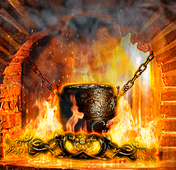
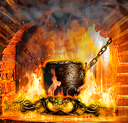

- Production Director creates a real magic. By mixing flakes, wood chips, sawdust of different wood species, juggling with tastes, Production Director adds spicy notes from twigs and fruits of berry bushes, creating a unique melody of tastes and smells. Having obtained the desired blend when smoked, each type of nut acquires its own particular and magical taste.
 
